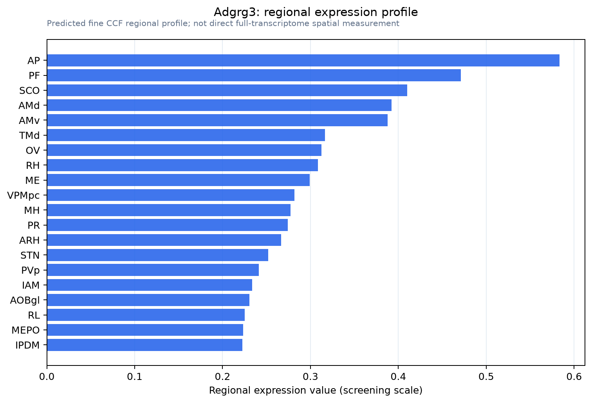

Adgrg3
Adhesion G protein-coupled receptor G3 (G protein-coupled receptor 97) [Cleaved into: Adhesion G protein-coupled receptor G3, N-terminal fragment (ADGRG3 N-terminal fragment); Adhesion G protein-coupl
Spatial tier: RESTRICTED · Class: GPCR · Top region: AP (Area postrema) · Positive regions: 17/554
43.2Discovery Score
36.4Targetability Score
CEvidence grade C
What this means: Adgrg3: fine CCF profile is restricted toward AP (top regions: AP, PF, SCO, AMd, AMv; 17 positive regions); direct spatial validation is still required.
Function in AP: evidence, prediction, innovation
- Gene function
- ADGRG3 (GPR97) is an adhesion-class G-protein-coupled receptor. Like other adhesion GPCRs it self-cleaves at a GAIN domain, leaving a tethered Stachel peptide that folds back into the seven-transmembrane bundle to activate Go and Gi. Cryo-EM showed that glucocorticoids such as cortisol and beclomethasone occupy a transmembrane pocket, although later work argues the tethered peptide rather than steroid is the physiological activator. Its best-established biology is in granulocytes, where it drives reactive-oxygen production and migration.
- Region function
- The area postrema is a circumventricular organ on the floor of the fourth ventricle with fenestrated capillaries and no blood-brain barrier; it samples circulating toxins, hormones and peptides and drives nausea, conditioned taste avoidance and suppression of feeding through the NTS and parabrachial nucleus.
- Published in this region
- inferred No region-specific literature found. ADGRG3 in mouse is essentially a granulocyte and myeloid gene (Hamann et al. 2015; Ping et al. 2021), so the most plausible source of an area postrema signal is the perivascular macrophage and border-associated myeloid population that this barrier-free organ uniquely supports.
- Predicted function
- Prediction: rather than a neuronal receptor, ADGRG3 here is most likely a mechano- and glucocorticoid-sensitive receptor on perivascular macrophages, tuning their inflammatory output at a site where circulating corticosterone has direct access to brain tissue. Deleting Adgrg3 should leave baseline feeding intact but alter the AP inflammatory response and the magnitude of sickness behaviour and anorexia after systemic LPS; Stachel-peptide agonism should dampen myeloid activation and blunt inflammation-driven nausea-like behaviour.
- Innovation
- ★★★★★ 5/5 An almost completely unstudied adhesion GPCR in an immunologically exposed brain region, with a plausible glucocorticoid link and no competing literature.
- Tools
- Adgrg3 knockout mice (used in experimental autoimmune encephalomyelitis work); synthetic Stachel/tethered-agonist peptides; anti-GPR97 antibodies (Alomone AGR-057); beclomethasone and cortisol as contested ligands. Cx3cr1-CreER and Lyz2-Cre give myeloid access; fourth-ventricle AAV reaches AP.
- References
Direct evidence located at the region
No Allen ISH section could be located at this region's centroid for the recorded experiments.
Look it up yourself: Allen Mouse Brain ISH for Adgrg3Allen reference atlas: AP (structure 207)ABC Atlas MERFISH viewer(in the ABC Atlas choose dataset MERFISH-C57BL6J-638850-CCF, colour cells by gene "Adgrg3" or by parcellation_substructure "AP")All genes confined to AP + 3-D brain
Direct spatial evidence
MERFISH REGION LOCATOR

Regional expression figure

Predicted WMB × fine-CCF profile; not direct full-transcriptome spatial measurement.
Spatial profile
Evidence and specificity
- Evidence status
- PREDICTED_FINE
- Direct sources
- None; predicted localization only
- Exclusive threshold
- 12 positive regions out of 554
- Spatial specificity
- 0.304
- Top-region fraction
- 0.063
- Filter status
- PASS
Interpretation limits
- Cell-type-to-region projection is imputed expression, not direct spatial measurement.
- Adult reference atlases do not establish stability across age, sex, strain, state, or disease.
- Transcript abundance does not guarantee protein abundance or genetic-tool performance.